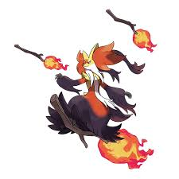

Guia dos Pokemon

Delphox
Descrição
Delphox é um Pokémon do tipo Fogo/Psíquico, introduzido na Geração 6 como a forma final de Fennekin, conhecido como o "Pokémon Raposa". Ele se assemelha a uma raposa bruxa com um longo manto de pelagem, utilizando um galho aceso como varinha mágica para criar vórtices de fogo de até 3000°C a 5400°C. É uma criatura bípede, de alta inteligência e focada no ataque especial.
Características Principais:
- Aparência: Alto e bípede, com pelagem cor de vinho que lembra um vestido/manto, pelagem amarela no peito e orelhas grandes com tufos laranja.
- Habilidades: Possui Blaze (aumenta golpes de fogo com vida baixa) e Magician (rouba itens do oponente ao atacar).
- Poderes Psíquicos: Ao olhar para a chama na ponta de seu galho, entra em foco para prever o futuro.
- Origem: Inspirado em raposas (feneco), bruxas e no oráculo de Delfos, combinando características de "Del" (Delfos) e "Fox" (raposa).
- Estatísticas: Destaca-se pelo alto Ataque Especial e velocidade considerável.
- Delphox evolui de Braixen no nível 36.